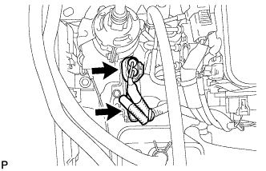

УСТРОЙСТВО УПРАВЛЕНИЯ ПОДАЧЕЙ ВОЗДУХА В НЕЙТРАЛИЗАТОР > СНЯТИЕ |
| 1. СНИМИТЕ УСТРОЙСТВО УПРАВЛЕНИЯ ПОДАЧЕЙ ВОЗДУХА В НЕЙТРАЛИЗАТОР С КРОНШТЕЙНОМ |
|  |
Отсоедините 2 разъема устройства управления подачей воздуха в нейтрализатор.
Выверните болт и снимите устройство управления подачей воздуха в нейтрализатор с кронштейном.
| 2. СНИМИТЕ УСТРОЙСТВО УПРАВЛЕНИЯ ПОДАЧЕЙ ВОЗДУХА В НЕЙТРАЛИЗАТОР |
 |
Выверните 2 винта и снимите устройство управления подачей воздуха в нейтрализатор.